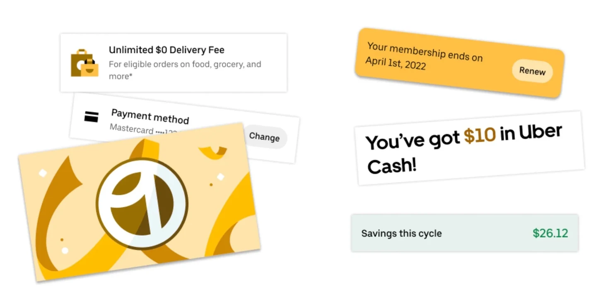
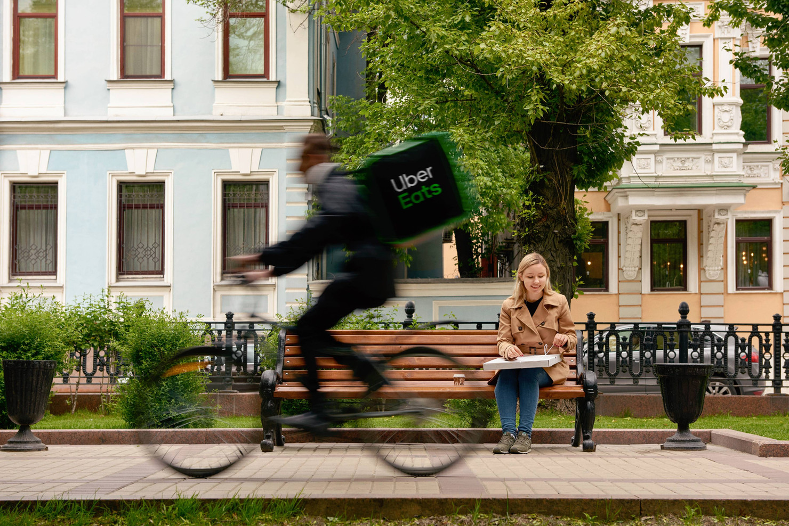

I Built a Knowledge Base That My AI Can Actually Use
I have a repository on my computer that has no code, only markdown files. Any agent I start can get up to speed on my entire project in about 3 seconds. That folder is the most productive tool in my workflow.
Why Chat + Tactile UI Is the Future
If chat alone isn't enough, and point-and-click menus are the overhead everyone hates — what does the right interface actually look like? Chat is for direction. Tactile UI is for decisions.
Chat Is Not the Final Interface
Since the launch of ChatGPT, we've embraced a new conversational way of interacting with computers. These systems offer insight into the world—and even into our personal lives—in ways we never expected from machines. This raises an obvious question: does the traditional point-and-click interface still make sense?

Architecting a mobile framework at Uber that allowed us to launch 4x faster and write 75% less code.
At the beginning of last year, my team started with a dizzying array of features to launch and we had a short amount of time for each. ...

ChatGPT And The Emerging Conversational Graphical User Interface
Everyday software that we use like Google Docs, Photoshop, Jira, and most mobile apps are about to become much more powerful and much...

Product Engineering at Uber
Why Uber? I joined Uber for a chance to work on products that blurred the lines between the physical and digital world. Uber is like a...